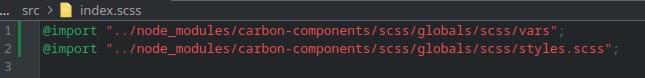
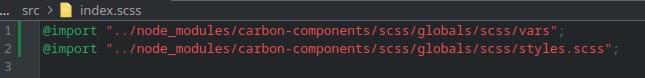
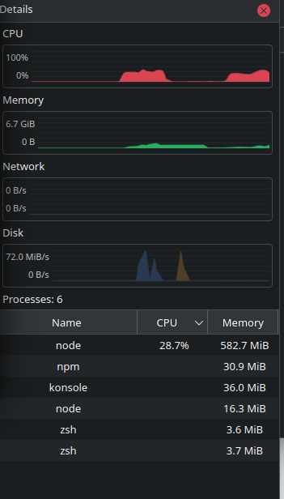
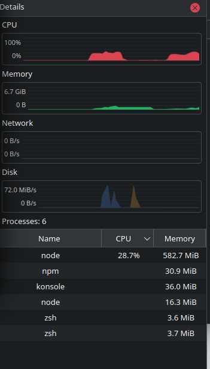

Backstory
Sustainability Upgrade Program(SUP) uses MERN stack on their admin portal. For a few months I was working on that React part. From the beginning I was facing ~10 minutes startup time. If IDE crashes again I have to wait for 10 minutes. It was very frustrating & one of our major bottleneck.
I always used to see this error message in the terminal

I didn't care about it because in the back-end also we get some errors, mostly due to AWS SDK upgrade.
One day I read the error. Understood something is wrong in index.scss. I knew we had carbon-component-react installed, in the node_modules folder. So I changed
 

And voila,startup time reduced to 10 seconds only!
Great success 👍
But How Did It Happen?
Suppose I invited you to my birthday party but I didn't give my address. Instead I tell
you my name is Fardin and I live in Dhaka
You've to ask millions of people in Dhaka
city to find my home. Can you imagine the situation 🥲
What if I tell you my address is 123/45 Malibagh. Super easy to find my home, right?
This is what happened
We only wrote @import "carbon-component-react..." but we didn't have any folder in that
name in current folder of index.scss
So what CSS loader did is, he started going through the whole project searching for
carbon-componen-react folder in every folder and subfolder
Matter of fact, this project has 13765 directories with 3-6 level of sub-folders☠️
Though most of them are 'node_modules', CSS loader was going to those folders too
First it searches for carbon-component-react folder -> loads -> starts admin panel. It
takes ~10 minutes to search for the folder
When I changed it to relative path @import "../node_module/carbon-component-react/...",
it didn't have to search/go through the project, it
simply loaded the defined folder. Reducing time at large. Just like my address, 123/45
Malibagh.
Resource usage before & after
 

After CPU usage is around 20-30% for ~10 seconds